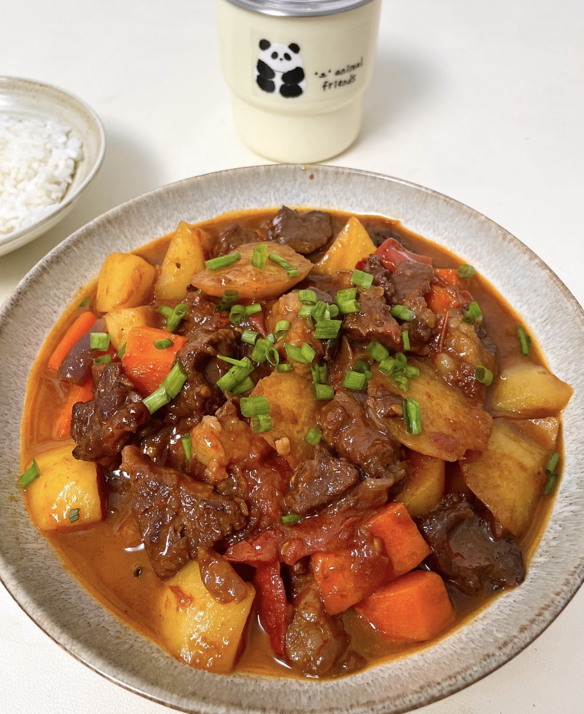
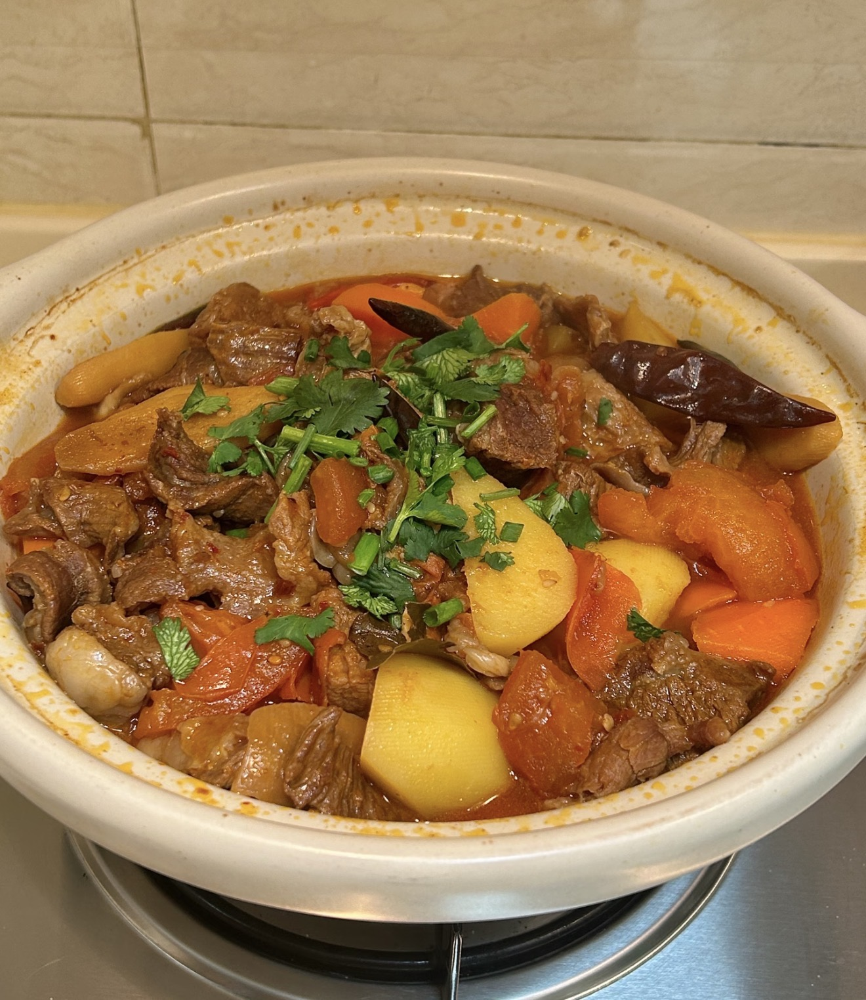

Tomato Potato Beef Stew
A rich and comforting stew with tender beef, tomatoes, and potatoes.
Ingredients
- Beef brisket (chunks)
- Tomatoes
- Potatoes
- Carrot (optional)
- Onion
- Ginger
- Star anise
- Bay leaves
- Cinnamon stick
- Cooking wine
- Soy sauce
- Dark soy sauce
- Oyster sauce
- Rock sugar
- Salt
Directions
- Blanch beef with ginger and cooking wine, then rinse.
- Heat oil and melt sugar until caramelized.
- Add beef and coat evenly.
- Add onion and cook until fragrant.
- Add tomatoes and cook until soft.
- Season with sauces.
- Add water to cover.
- Add spices.
- Simmer for 30 minutes.
- Add potatoes and carrot.
- Cook for another 20 minutes.
- Adjust seasoning and serve.